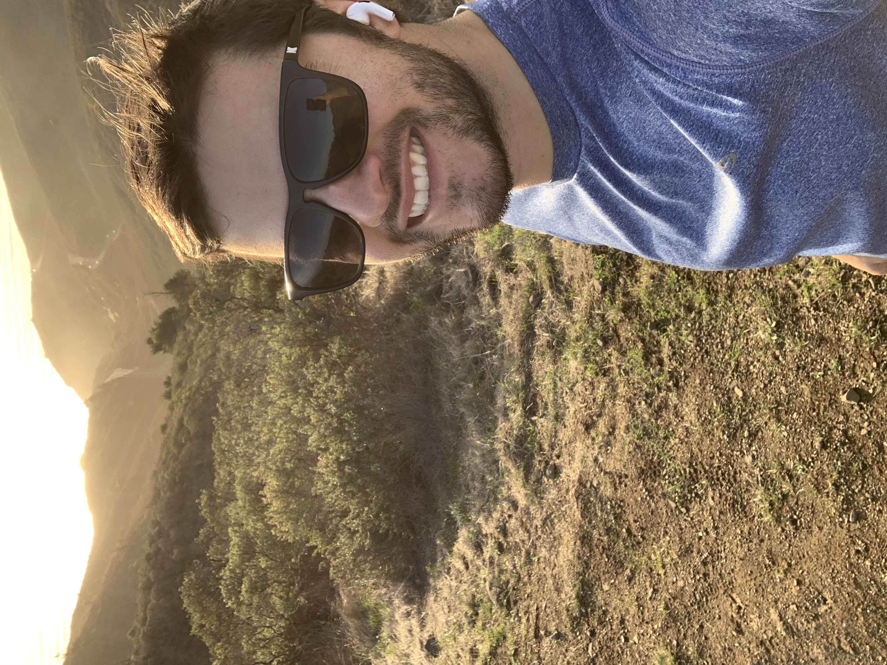
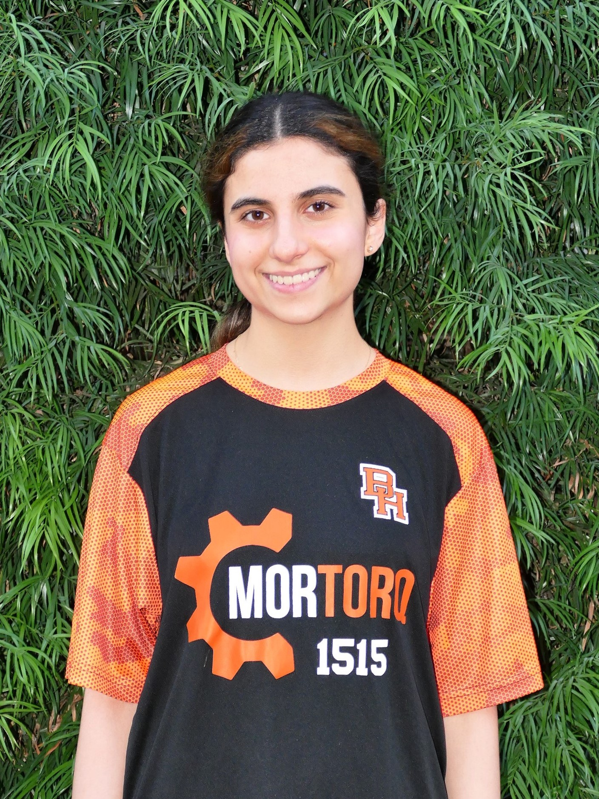
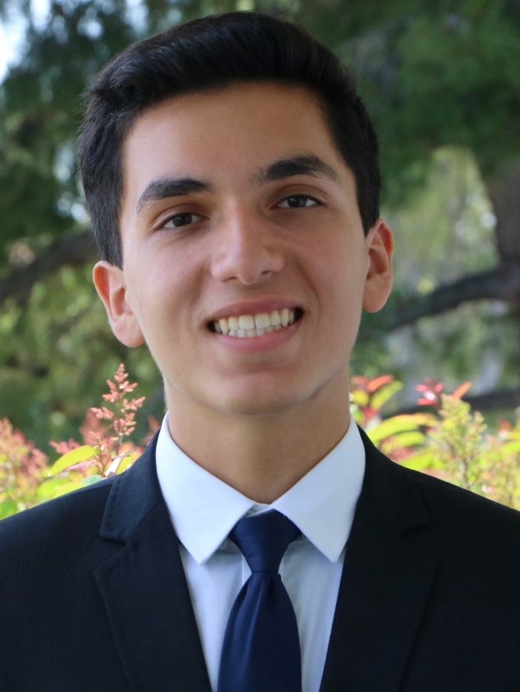
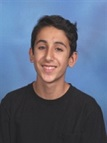

BUILD TEAM
PROGRAMMING TEAM
BUSINESS TEAM
- 
Alex O'Dorisio
Teacher/Financial Consultant
This is my second year with Team 1515, and I absolutely love helping push our inspiring students further into the world of business development. My role is to encourage students and mold their innovative minds. This is done through introducing real world business tactics & concepts that enable participants to go forward and initiate the transition of business ideas, into successful businesses. FRC has been influential by allowing me a degree of insight into the real world impact these young participants can enact today. The services and ideas discussed by students are not just inspiring and/or interesting, they are life impacting, world changing concepts and technology. Knowledge is power and the dissemination of knowledge has never, throughout history, been proliferated to such an extent as we see today. FRC is that platform that highlights this realization.
- 
Sarah Lepkowitz
CEO of Buisness
This is my third year on MorTorq. As a freshman, I was in Engineering and have been on Business since. I am so happy I have had the opportunity to be on this team! It has truly changed my life and made me realize that I am interested in studying both STEM and Business. The hands-on experience I have gained by being in this class is unique and priceless. As President of Business, I have learned so much about teamwork, synergy, and the satisfaction of a job well done together. I look forward to the rest of the year and next year on this team! Go MorTorq!
- 
Jonah Danesh
COO of Buisness
I have been on Mortorq team 1515 for the past three years, and I have spent those years in the business subdivision of the team. I am currently the Chief Operating Officer of the business team and also the leader of the fundraising sector of business. FRC has influenced me in a plethora of ways, but most importantly, it has shaped me into the person I am today by challenging me with difficult yet beneficial tasks. This includes strengthening my public speaking, writing, and leadership skills as whole.
- 
Ryan Nikfarjam
Chief Financial Officer
I have been a part of the team since my freshman year. As the team’s CFO I am currently in charge of the team’s finances and need to ensure our team’s financial stability. Being a part of MorTorq has taught me many key business principles as well as how to efficiently adapt to new situations.

Kevin Manavi
Chief of Communications
I've been on MorTorq for three years. Currently I am the chief of communications. FRC has made me more confident in my ability to work with a team. I've learned so much about public speaking and leadership from my time at competitions and made so many friendships.